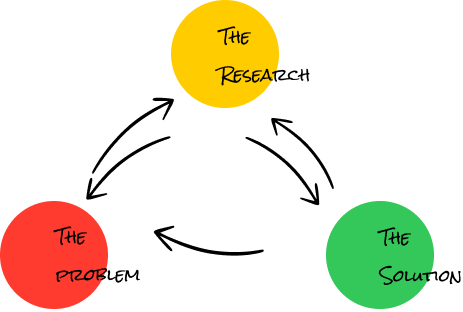
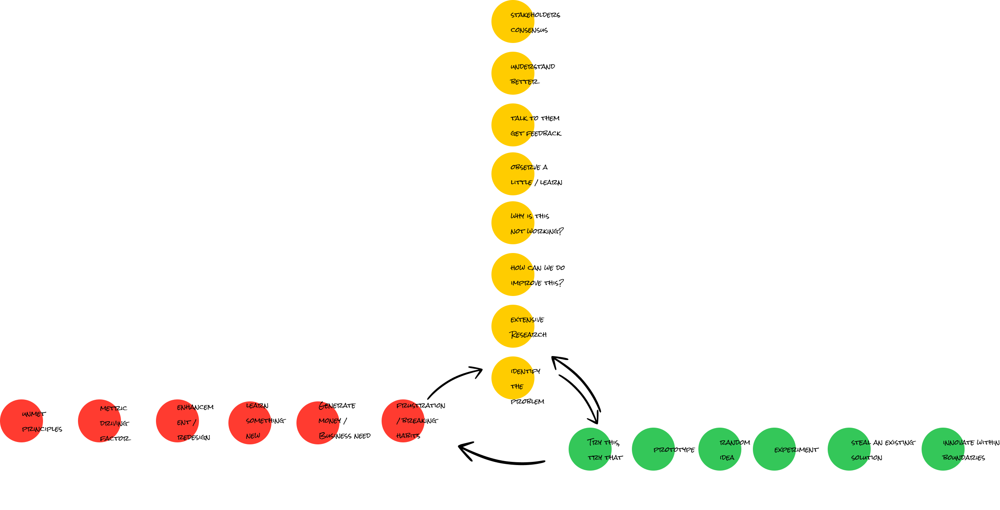

Mostly all projects have a different method or an approach, but largely the framework remains the same there are some process that I have followed by the book & some that were just instantaneous gut based method. Mostly, the there's always a existing process by the book for every gut based method I have had This collection of work showcases the specific method I have used and how it drove the impact. Sometimes I have also reflected back to see what-if I used another method - these were learnings There are times when I have absolutely pasted/stolen existing solutions from else where and they've seemed to work just fine too
The elements of my framework are fairly simple. The problem could start with a 'red' where the problem statement is given, or it could start from a 'green' an idea that I had in mind. Usually I spend time to understand the problem deeper ('yellow') by trying a method to figure out what the core problem is. The 'green' is an action taken to validate the hypotheses whether it solves the problem or not, by either prototyping or conducting an experiment to figure out what works and what doesn't. Usually the solution isn't clear the first time and thus it requires to conduct a validation ('yellow') again, either by observing what could be the gaps, or talk to end users to get their feedback and so on.

I have undertaken this very approach in one form or another largely within this framework. You could go ahead and see the what I have worked on and how it relates to the way I work.
